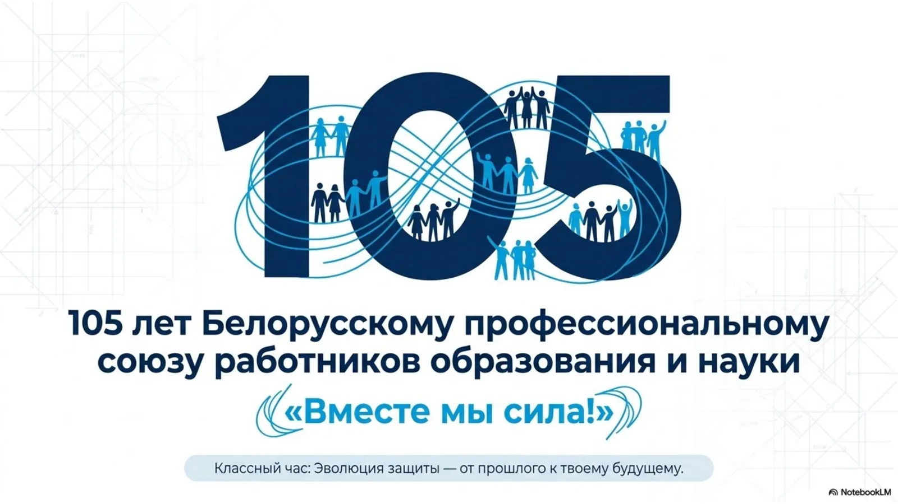
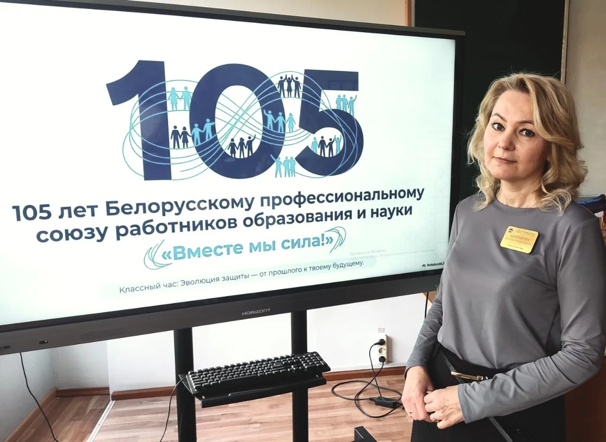

105 лет солидарности
Классный час к 105-летию Белорусского профессионального союза работников образования и науки: от первых учительских обществ 1897 года до программы на 2025–2029 годы.

Задача
Рассказать молодой аудитории о 105-летней истории профсоюза так, чтобы это не превратилось в лекцию с датами. Нужно было уложить большой исторический материал, цифры и практическую пользу профсоюза в один урок, который удерживает внимание.
Что сделано
- Таймлайн истории от 1897 до 2025 года: каждый период на своём слайде с одной главной мыслью
- Блок «Современность в цифрах»: более 610 000 членов, около 7 000 первичных организаций
- Практическая часть для молодёжи: права несовершеннолетних на работе, мозговой штурм «Первый год работы»
- Интерактивная игра «Верю – не верю» с отдельным слайдом ответов
- Блок вопросов для обсуждения и итоговый слайд с выводами урока
- Единая визуальная система: тёмно-синяя палитра, иконки и карточки вместо сплошного текста
Результат

«Презентация прошла на УРА! Несмотря на серьёзную тему о профсоюзах, дети слушали с интересом. Спасибо большое!»